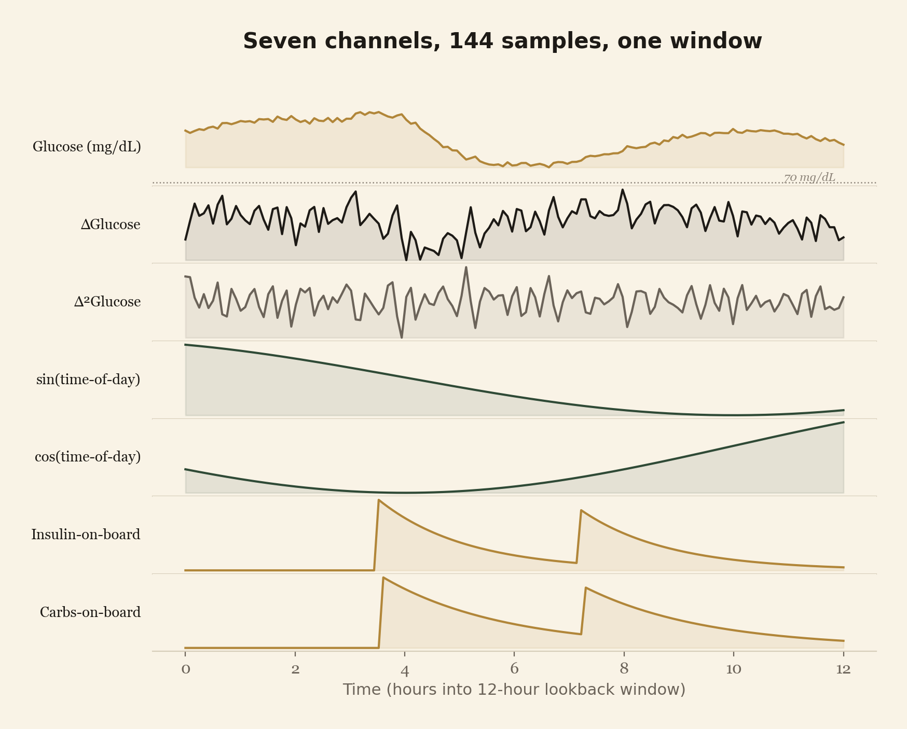
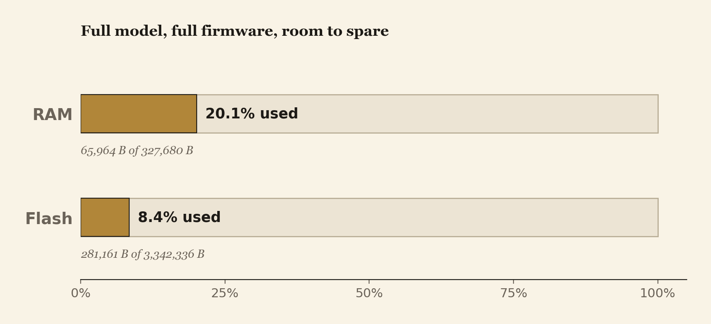
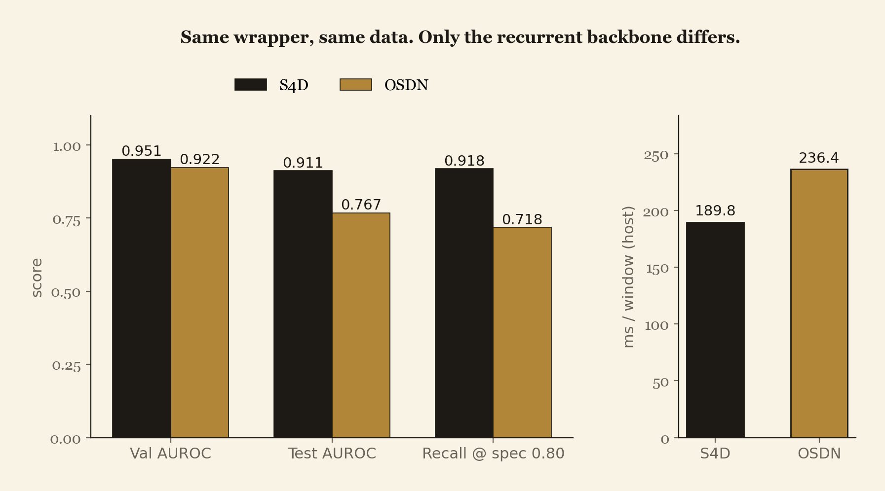

A linear-attention sequence model, an autograd engine, a multi-threaded trainer, and an on-device inference kernel. Written from scratch in 5,500 lines of C++17 and shipped to an ESP32-S3.
A recent linear-attention architecture, reimplemented from scratch in pure C++ with its own autograd engine, trained on real clinical data, and run on a $4 microcontroller to predict hypoglycemia 60 minutes ahead. Everything in the repository is built from the C++17 standard library: no PyTorch, no TensorFlow, no Eigen, no BLAS, no OpenMP. The shipped artifact is a trained model whose FP32 inference kernel runs on an ESP32-S3 in 20% of its RAM, raising a hypoglycemia alarm an hour before onset, verified to agree with the FP64 training reference to 8 decimal places.
Two linear-recurrent backbones are studied. S4D (diagonal structured state-space, Gu et al. 2022) was picked because glucose dynamics are slow and long-range, and its diagonal complex-pole formulation captures circadian and post-meal behaviour at tiny parameter count. OSDN (online spectral delta network, arXiv:2605.13473, May 2026) was picked as the second backbone: a recent DeltaNet-family linear-attention variant that should be faster than S4D in principle, and is faithfully reproduced from the paper's math here for the first time outside the authors' codebase.
The novelty is the path, not the architectures. This is the first pure-C++ stdlib reproduction of a DeltaNet-family model, the first end-to-end training of either model through a hand-rolled scalar autograd, and the first bit-equivalent port of either to a $4 microcontroller, gated by a triple-redundant FP32 / FP64 correctness proof through make check.
make check.Closed-loop insulin systems live or die by the latency and reliability of their glucose forecast. In practice the forecast usually lives on a phone or in the cloud, both of which add round-trip latency and a failure surface that matters for someone whose blood sugar is dropping.
Both architectures studied here belong to the linear-attention family. They maintain a recurrent state of fixed size that absorbs the entire history of a window, so inference cost is constant in window length. A transformer at the same accuracy would not fit on an ESP32-S3; a linear-attention model can.
The two architectures are existing math. The novelty is the build, and three findings fall out of it.
Value graph, an explicit-stack topological backward, a hand-rolled fork-join trainer, and a header-only inference kernel that is the same physical file in the host test and the firmware.make check. The hardware path is not bolted on at the end; it is part of the build's contract.Every layer below is something most stacks would simply import. The work was building the whole thing from primitives, then proving the on-chip path agrees with the training-time math.
A scalar reverse-mode automatic differentiation engine (src/value.{hpp,cpp}, 268 lines). Every arithmetic operation is a heap node that records a closure for pushing gradients backward.
backward() runs an explicit-stack topological traversal. Plain recursion overflows the stack on a 144-step graph.src/complex_value.{hpp,cpp}) so the S4D model's complex hidden state backpropagates through the same engine. In a normal stack this is torch.autograd.src/grad_check.cpp, 284 lines): 12 primitives across 61 test points, with analytical fallbacks at singularities and regression points that must pass after each fix. Normally this is torch.autograd.gradcheck.src/s4d.{hpp,cpp}, 108 lines), the model the project began with: a diagonal state-space layer with complex poles and hybrid ZOH / Euler discretization, backpropagating through the complex-value engine.src/osdn.{hpp,cpp}, 218 lines), implemented from the §4.2 online-preconditioned delta rule in arXiv:2605.13473, built directly from the paper's math.An implementation finding worth noting. The paper's §4.2 Equation (4) includes a box-projection step on the preconditioner, d ← clamp(d, 0.5, 2.0). The Algorithm 1 pseudocode leaves it out, noting it is omitted "for clarity." Implement the pseudocode as written and FP32 inference silently produces NaN on trained weights, because the preconditioner drifts out of its stable band. Restoring the clamp fixes it. The interesting part: the clamp costs roughly 0.07 test AUROC (an unclamped run scores higher on paper), yet the clamped model is the only one that survives float32 on the device. The deployable number is the one reported here.
Both models share the same wrapper network, same 7-channel input, same trainer, same patient-disjoint split, and the same threshold methodology, so any comparison between them measures the recurrent backbone rather than scaffolding.
A hand-built fork-join thread pool on raw std::thread, std::mutex, and std::condition_variable (src/cgm_train.cpp, roughly 997 lines), driving synchronous data-parallel training.
DataParallel, written by hand because scalar-Value parameter nodes cannot be shared across threads (each carries a per-thread gradient accumulator).main() on malformed input.Ohio T1DM (obtained under a data-use agreement), parsed and windowed from scratch (src/cgm_data.cpp, 373 lines). Seven channels per window: glucose, first and second glucose differences, sine and cosine of time-of-day, insulin-on-board, and carbs-on-board (both with exponential-decay pharmacokinetics).

A header-only FP32 inference kernel (src/osdn_inference.h, 297 lines): allocation-free, stack-only, and the same physical file compiled into both the host test and the firmware. Its correctness is enforced by three independent implementations of the same OSDN math, the training autograd, an independently written reference network, and the FP32 kernel, asserted to agree at |diff| = 7.96795993 × 10⁻⁷, held bit for bit through the entire hardening sequence by make check.
The ESP32-S3 firmware (roughly 716 lines) is a complete on-device alarm.
src/features_host_test.cpp, maximum difference 4.8 × 10⁻⁷).
Patient-disjoint Ohio T1DM. Validation = {584, 588}, test = {591, 596}. 8 train, 2 validation, 2 test. Identical wrapper network across both architectures: 7-channel input, H = 16, lookback = 144 (~12 hours), horizon = 12 (~60 minutes ahead), stride = 12, seed = 42.

| Architecture | Params | Val AUROC | Test AUROC | Recall @ spec 0.80 | ms / window |
|---|---|---|---|---|---|
| S4D | 562 | 0.9510 | 0.9113 | 0.918 | 189.8 |
| OSDN | 747 | 0.9220 | 0.7669 | 0.718 | 236.4 |
Same split, same 7-channel features, same trainer, same threshold methodology. On this task the S4D model scores higher on test AUROC (0.9113 vs 0.7669), recall (0.918 vs 0.718), and post-bolus recall (0.919 vs 0.676), at roughly matched specificity (0.67 vs 0.68) and lower per-window inference cost.
FP32 device kernel agreement with the FP64 host autograd: |diff| = 7.97 × 10⁻⁷ (tolerance 1 × 10⁻⁴; this is agreement within float rounding, not a deterministic byte match). Read the validation-to-test gaps rather than the point estimates: with n = 2 test patients, absolute AUROC is high-variance. Full caveats below.
A glucose forecaster that runs on the sensor itself removes a whole class of failure modes from closed-loop insulin delivery: dead phones, lost networks, cloud outages. The math says it is achievable at $4 of silicon. Cheaper to ship means safer continuous monitoring can reach more people, and "more people" is the part of the healthcare story that gets harder, not easier, with cloud-dependent designs.
Statistical and data regime.
auroc_approx); it differs from scikit-learn by a tie-dependent amount.Architecture and method.
sigmoid(log_lambda) decay, LayerNorm on the K-readout, a per-channel residual, and a tanh input embedding), none of which are part of vanilla OSDN, and all kept identical across the S4D and OSDN runs so the comparison reflects the backbone.n_layers >= 2 with K = 16 produces NaN in FP32 (documented in-kernel). The shipped configuration (n_layers=1, K=8) sits inside the verified envelope.Engineering and deployment.
The limitations above map directly onto the second stage of this project.
The pipeline absorbs these without structural change. The split policy, normalization, and evaluation are already isolated behind the trainer's configuration, so stage two is a matter of running the existing machinery across more folds and seeds rather than rebuilding it.
Thanks to Cindy Marling and Razvan Bunescu (Ohio University) for the OhioT1DM dataset, obtained under a data-use agreement. The OSDN formulation is from arXiv:2605.13473.
@inproceedings{marling2020ohiot1dm,
title = {The OhioT1DM dataset for blood glucose level prediction: Update 2020},
author = {Marling, Cindy and Bunescu, Razvan},
booktitle = {The 6th International Workshop on Knowledge Discovery from Healthcare Data (KDH)},
year = {2020},
url = {https://pmc.ncbi.nlm.nih.gov/articles/PMC7881904}
}